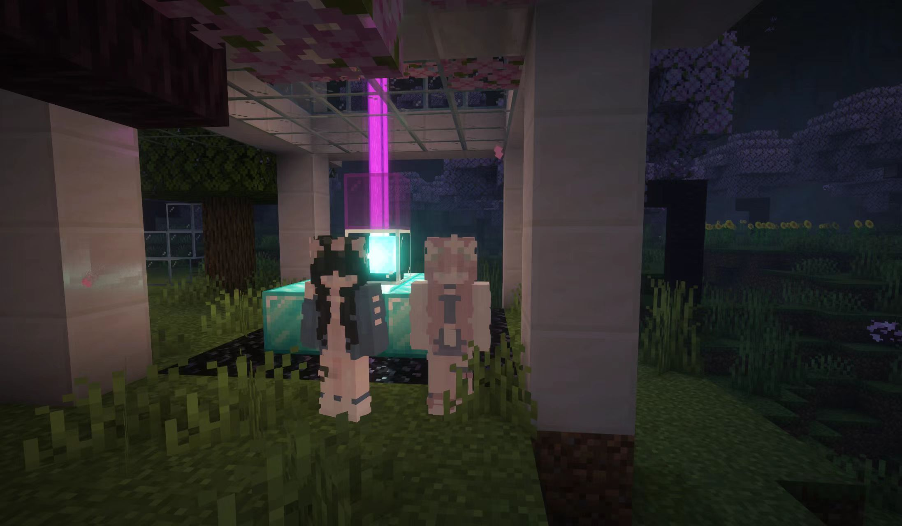
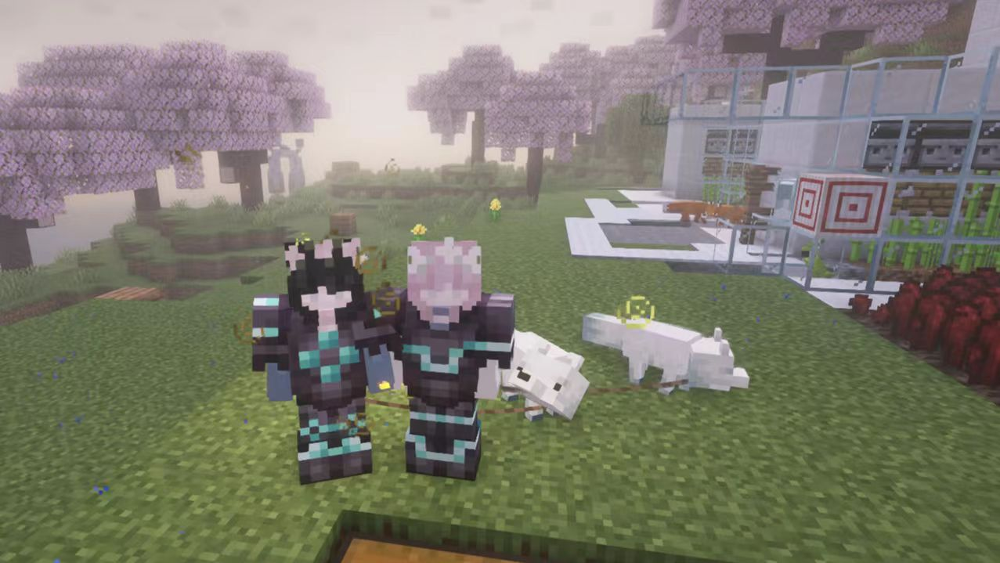
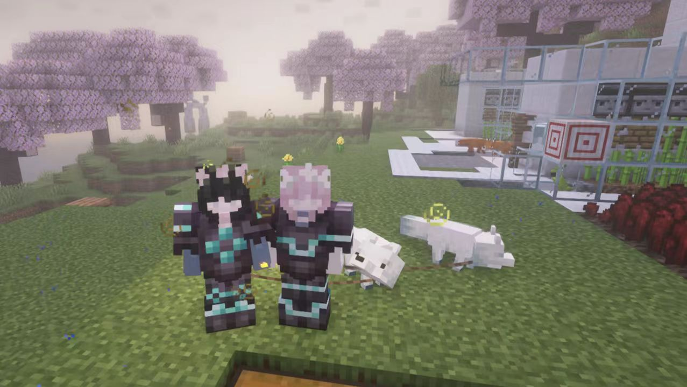

？？？
“那我们就成立Overvoid这个乐队吧！”
“好呀！”
“……”
“这个乐队仍然存在，只是再也没有人来了。”
起源
这个乐队的起源，是在7月份，只是因为我和他想要尽力去帮助别人，所以我们组了这样一个乐队。 这是在zzn的mc服务器上面进行的。我们想要去帮助那些需要帮助的人们。 但目前来看，这只是一个过于理想化的想法而已。这终究会是一次失败的尝试。
 

这些就是我的关于Overvoid的最开始的记忆了。
Overvoid最开始的有关主题:
Over the void,
Beyond the eternity.
See you tomorrow,
Love you forever.
发展
我喜欢在服务器里面制造一些机器，一些建筑。我还挺乐意做这些的，就像小时候一样。 他总是会陪着我，在服务器里面。这些时光我虽然还记得，但我不想记得了，就像从来都没有发生过一样。 他也会为我提供帮助和指导……但那都不重要了。 到后来，有了新成员的加入。从此，Overvoid2.0时期开始了。似乎一切都在向前发展。
她来了。Overvoid正在蒸蒸日上。我们会尽力去帮助别人的，对吧。 我们最终会踏破虚无，超越永恒。
Overvoid 2.0 主题:
Over the void,
Beyond the eternity.
Save you together,
Love you forever.
我很感谢你们的帮助，当时和你们在一起的时光，我感到很幸福，至少我不再是孤单一人。但是真的抱歉，我需要封存它们了。
离去
随着我和他的不欢而散，Overvoid也就到此结束了。这里再也没有人来了。 一切只剩下了空虚，寂寞和冷清。在她也离去之后，世界只剩下了我们独自前行。 世界遍布荆棘，扎的我们痛不欲生。但我们依然要前行下去。
这一切都是一场大梦而已。其实什么都没发生过，没存在过。一切都是假象而已。
最后编辑：2025-11-8 ？？
<< \\最后出现：2025-8-4>>
编辑人：Aronda,Stoma White,Yuki Rin
views:1
likes:0